Die chemische Bindung – Prüfungstraining Chemie (Klasse 9)

Der Rechtsstaat – Prüfungstraining Sozialkunde (Klasse 9)

Die soziale Marktwirtschaft – Prüfungstraining Wirtschaft (Klasse 9)

Die Bevölkerungsentwicklung – Prüfungstraining Erdkunde (Klasse 9)
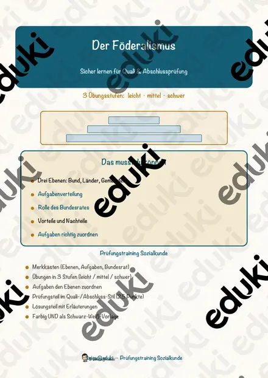
Der Föderalismus – Prüfungstraining Sozialkunde (Klasse 9)

Die Vererbung – Prüfungstraining Biologie (Klasse 9)

Das Immunsystem – Prüfungstraining Biologie (Klasse 9)

Der Tourismus – Prüfungstraining Erdkunde (Klasse 9)
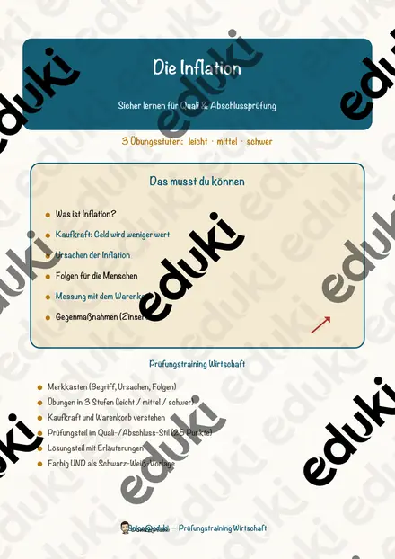
Die Inflation – Prüfungstraining Wirtschaft (Klasse 9)
Der Elektromotor – Prüfungstraining Physik (Klasse 9)

Die Zellatmung – Prüfungstraining Biologie (Klasse 9)
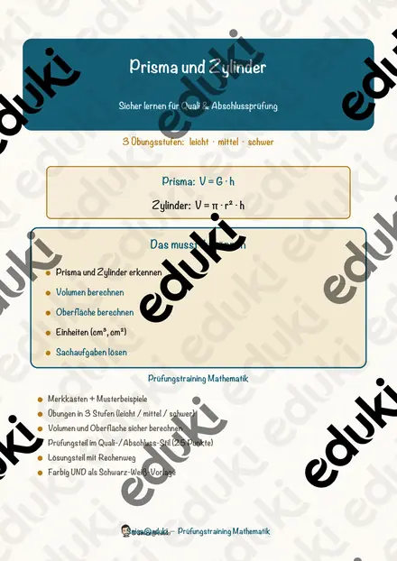
Prisma und Zylinder – Prüfungstraining Mathematik (Klasse 9)
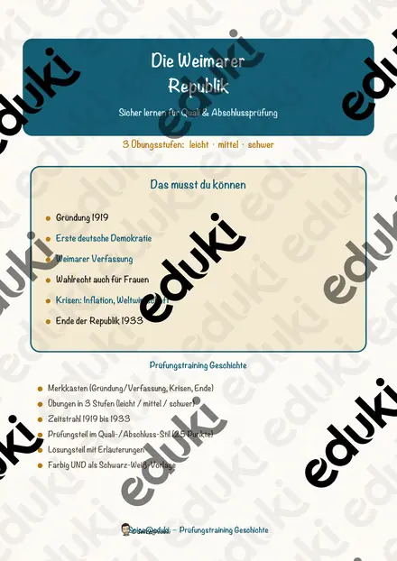
Die Weimarer Republik – Prüfungstraining Geschichte (Klasse 9)

Die Verstädterung – Prüfungstraining Erdkunde (Klasse 9)
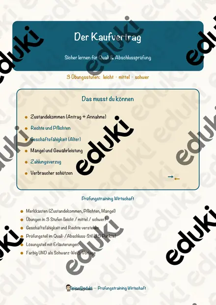
Der Kaufvertrag – Prüfungstraining Wirtschaft (Klasse 9)
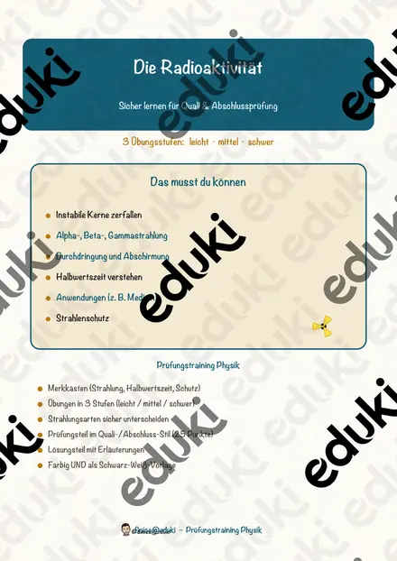
Die Radioaktivität – Prüfungstraining Physik (Klasse 9)
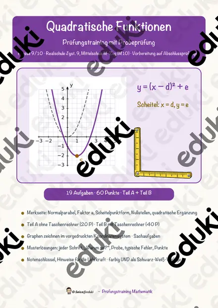
Quadratische Funktionen – Prüfungstraining Mathematik (Klasse 9)
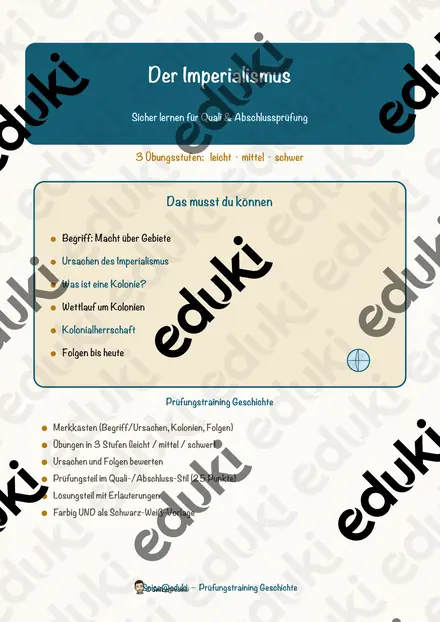
Der Imperialismus – Prüfungstraining Geschichte (Klasse 9)
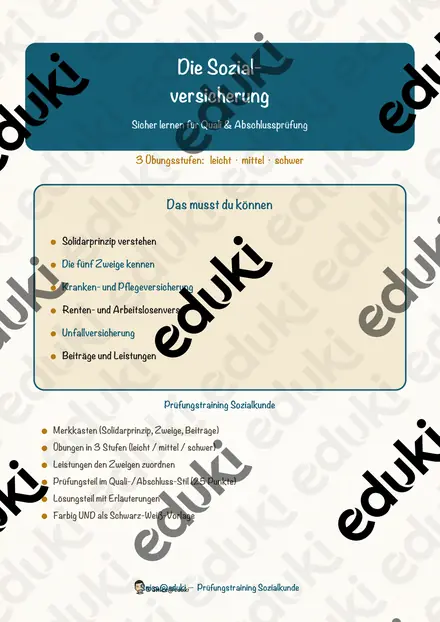
Die Sozialversicherung – Prüfungstraining Sozialkunde (Klasse 9)
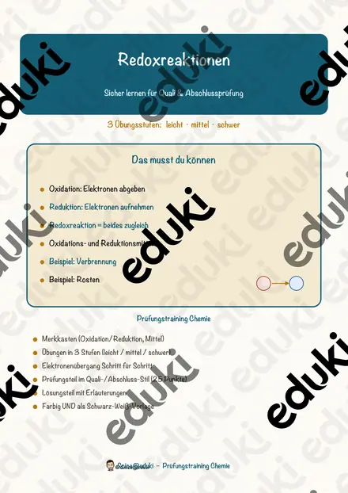
Redoxreaktionen – Prüfungstraining Chemie (Klasse 9)
Die Vereinten Nationen – Prüfungstraining Sozialkunde (Klasse 9)

Die Kurzgeschichte – Prüfungstraining Deutsch (Klasse 9)

Das Hormonsystem – Prüfungstraining Biologie (Klasse 9)
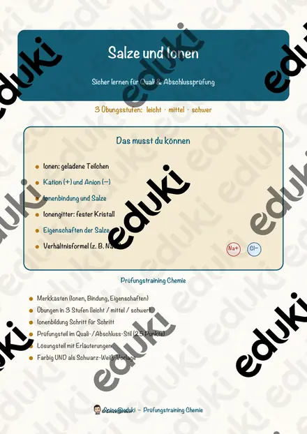
Salze und Ionen – Prüfungstraining Chemie (Klasse 9)
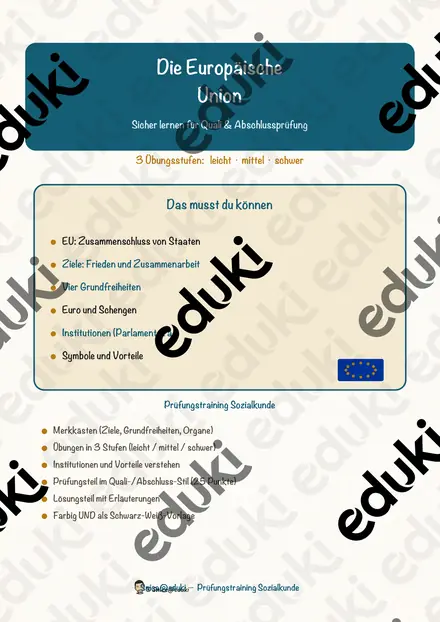
Die Europäische Union – Prüfungstraining Sozialkunde (Klasse 9)
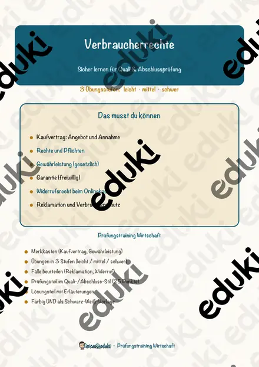
Verbraucherrechte – Prüfungstraining Wirtschaft (Klasse 9)

Rohstoffe und Energie – Prüfungstraining Erdkunde (Klasse 9)

Berufswahl und Ausbildung – Prüfungstraining Wirtschaft (Klasse 9)
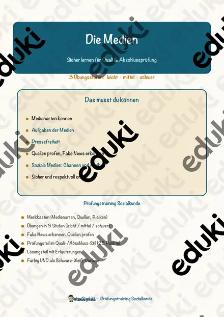
Die Medien – Prüfungstraining Sozialkunde (Klasse 9)
Die Menschenrechte – Prüfungstraining Sozialkunde (Klasse 9)
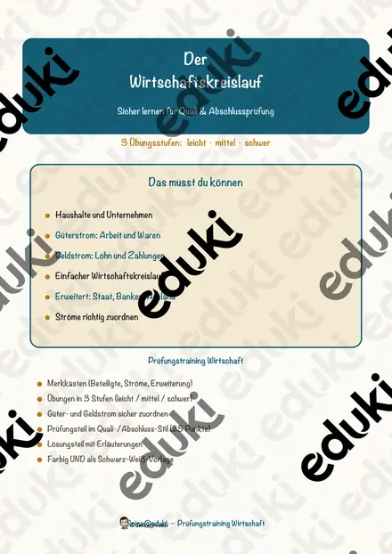
Der Wirtschaftskreislauf – Prüfungstraining Wirtschaft (Klasse 9)

Das Blut – Prüfungstraining Biologie (Klasse 9)

Der Klimawandel – Prüfungstraining Erdkunde (Klasse 9)
Geld und Zahlungsverkehr – Prüfungstraining Wirtschaft (Klasse 9)
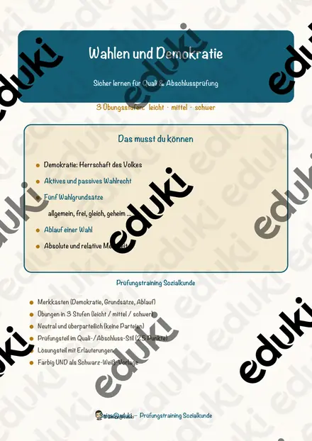
Wahlen und Demokratie – Prüfungstraining Sozialkunde (Klasse 9)
Potenzen und Wurzeln – Prüfungstraining Mathematik (Klasse 9)
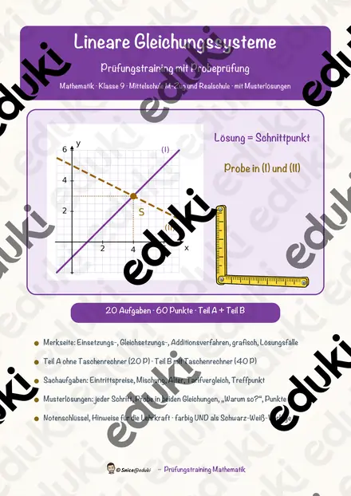
Lineare Gleichungssysteme – Prüfungstraining Mathematik (Klasse 9)

Die Evolution – Prüfungstraining Biologie (Klasse 9)
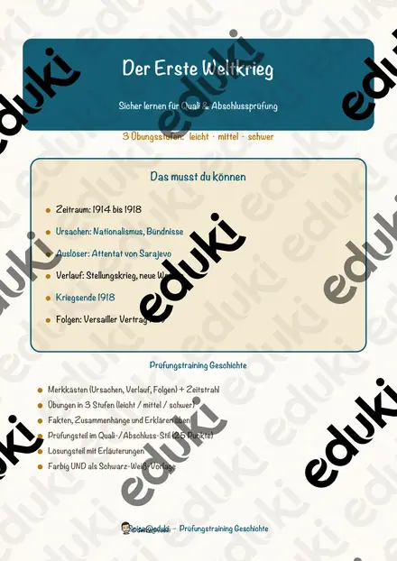
Der Erste Weltkrieg – Prüfungstraining Geschichte (Klasse 9)
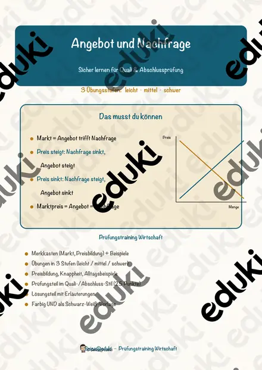
Angebot und Nachfrage – Prüfungstraining Wirtschaft (Klasse 9)
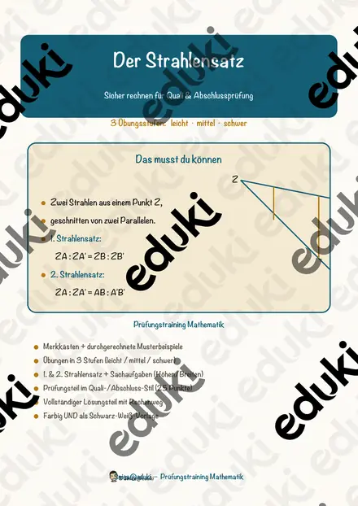
Der Strahlensatz – Prüfungstraining Mathematik (Klasse 9)

Die Sachtextanalyse – Prüfungstraining Deutsch (Klasse 9)

Das Grundgesetz und die Grundrechte – Prüfungstraining Sozialkunde (Klasse 9)
Chemische Reaktionsgleichungen – Prüfungstraining Chemie (Klasse 9)
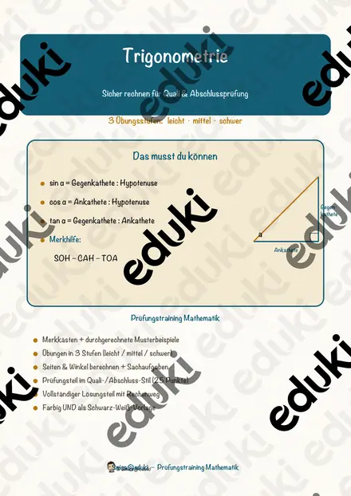
Trigonometrie – Prüfungstraining Mathematik (Klasse 9)
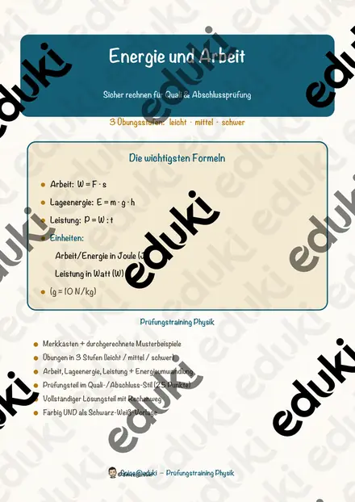
Energie und Arbeit – Prüfungstraining Physik (Klasse 9)

Die Gedichtanalyse – Prüfungstraining Deutsch (Klasse 9)
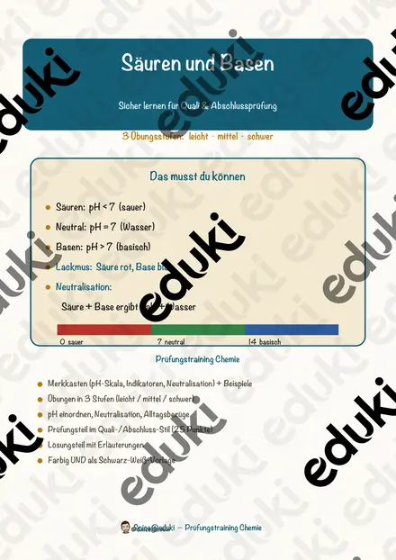
Säuren und Basen – Prüfungstraining Chemie (Klasse 9)
Quadratische Gleichungen – Prüfungstraining Mathematik (Klasse 9)
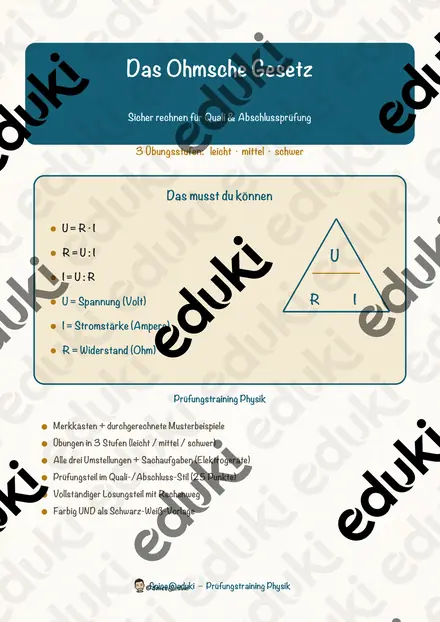
Das Ohmsche Gesetz – Prüfungstraining Physik (Klasse 9)

Die Erörterung – Prüfungstraining Deutsch (Klasse 9)
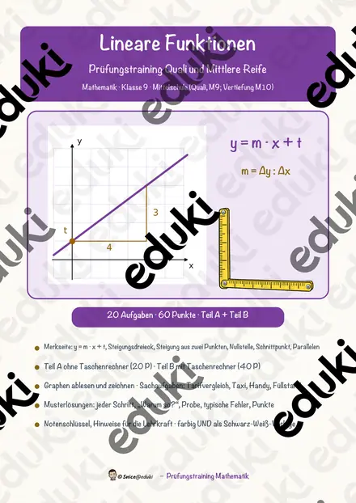
Lineare Funktionen – Prüfungstraining Mathematik (Klasse 9)
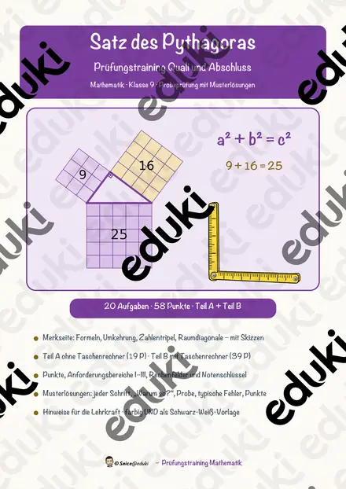
Satz des Pythagoras – Prüfungstraining Mathematik (Klasse 9)
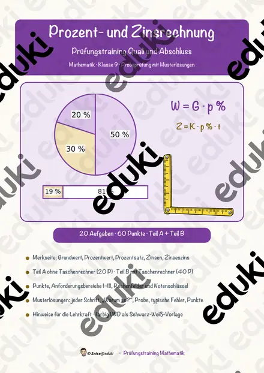
Prozent- und Zinsrechnung – Prüfungstraining Mathematik (Klasse 9)
Keine Materialien gefunden – versuch einen anderen Suchbegriff oder Filter.